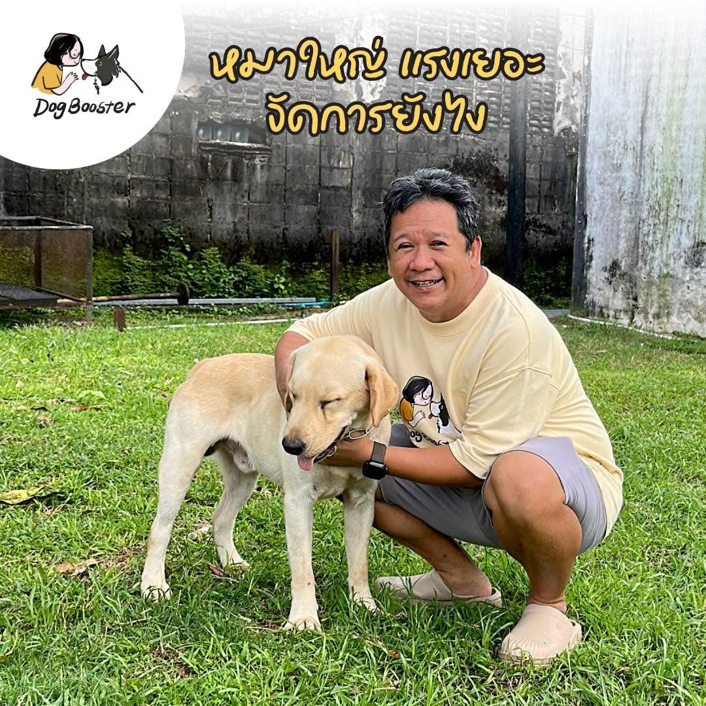

หมาตัวใหญ่เขาแรงมากกว่าเราอยู่แล้ว ถ้าไม่ฝึกให้ดี แค่พลาดนิดเดียว… ก็อาจเกิดอุบัติเหตุได้ จนหลายคนคิดว่า “หมาตัวใหญ่ต้องใช้สายรัดคอถึงจะเอาอยู่”
เพราะเวลาเขาดึง แรงจะกดไปที่หลอดลมและกระดูกคอ หมาจะเจ็บ → เครียด → และอาจหยุดเดินได้จริง แต่ผลคือ ยิ่งดึง ยิ่งแพ้ ทั้งคนทั้งหมา สุดท้าย แม้หมาจะหยุดดึงเพราะเจ็บ แต่ความรู้สึกไม่ดีกับสิ่งที่เจอ จะฝังลึกกว่าเดิม
เพราะมันกระจายแรงทั่วตัว และจุดคลิปอยู่หน้าอก พอหมาดึง ตัวเขาจะหมุนกลับเข้าหาเราโดยอัตโนมัติ ไม่ต้องใช้แรงแข่ง ไม่เจ็บ และไม่ทำให้รู้สึกแย่กับสิ่งรอบข้าง
เพราะหมาตัวใหญ่ไม่ได้ต้องใช้แรงมากกว่า แต่ต้องการ “คนที่เขาอยากเดินด้วยมากกว่า”